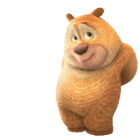

全球两栖动物刚刚跨过一个里程碑：被描述的物种数达到 9,072 种，其中无尾目（青蛙与蟾蜍）约 7,828 种，占绝对多数。中国记录的蛙科物种有 164 种，从乡间水田的黑斑蛙、泽蛙，到山林溪流中的石蛙，它们构成了一个被低估的“隐形物种库”。然而，同一组数据也指向另一面：在 IUCN 红色名录评估中，41% 的两栖动物被归入受威胁等级，蛙类（无尾目）的受威胁比例为 39%，两栖动物是脊椎动物中受威胁最严重的一类。
青蛙的生态价值有具体的“数字账本”。田间观察数据常被通俗地表述为“一只青蛙一天捕食害虫 50 至 200 只，一年可达 1.5 万只左右”。更严格的研究给出了“食谱占比”：菲律宾吕宋疣蛙的食谱中，水稻害虫占 54.1%；日本树蛙在豆田胃内容物分析中，蚜虫占全部猎物的 67.2%，叶甲和毛虫也频繁出现。这意味着青蛙并非“偶尔吃虫”，而是在特定农田生态系统中承担着可量化的害虫抑制功能。但这一功能正被栖息地丧失和气候变化削弱：全球评估显示，37% 的两栖动物种群状况恶化可归因于栖息地丧失，39% 与气候变化相关。
保护青蛙的数据缺口同样值得注意。两栖动物占全球受威胁脊椎动物的 25.2%，获得的保护资金却仅占 3.4%；栖息地丧失与退化威胁着 2,684 种两栖动物，是单一最大威胁类别。与此同时，超过一半的蛙类物种至今只有成体描述，胚胎、蝌蚪阶段的栖息地和习性几乎空白，而保护措施往往只瞄准成体。青蛙的“消失”不只是数量下降，更是一场在数据不足中加速的退场。

三点收束：青蛙的多样性仍在被“发现”（9,000 种里程碑），但其生存空间在被“压缩”（41% 受威胁）；它在农田中的功能可以被量化（害虫占比过半），却只获得极不相称的保护资源（3.4%）。数据新闻的意义不在于把青蛙“可爱化”，而在于把它的退场从一句“数量减少”变成一组可追踪、可比较、可追问的数字。